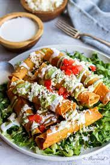

Flautas de Pollo
Makes 4 servings.

Description
Flautas de Pollo is my absolute favorite dish, I could eat this every day
and never tire of them. It brings me nostalgia and every time I make them,
the dinner table is full of smiles. It is one of the easiest dishes to make
and full of flavor.
Ingredients
For the chicken:
- 1 lb chicken breast
- 1/2 onion
- 3 garlic cloves
- 2 bay leaves
- 2 tbsp chicken bouillon
For the flautas:
- 16 corn tortillas
- oil for frying
- 1 large avocado
- 2 roasted jalapenos, or serranos for a kick (optional)
- 2 tbsp cup of milk
- 1/3 cup fresh cilantro
- 8 oz Mexican crema
- 5 oz queso fresco, crumbled
- 2 roma tomatoes, diced
- 4 cups shredded lettuce
Instructions
- Place the chicken, onion, garlic, bay leaves and bouillon in a large pot.
Add enough water to completely cover the chicken.
Simmer for about 20-30 minutes until the chicken is tender.
Transfer to a bowl and let cool.
Once the chicken has cooled use two forks to shred the meat. Set aside.
- Add oil to a wide pan so that it comes up just to 2 inches, Heat over medium to high heat.
tip: You can drop a small piece of a tortilla, and once it crisps up, the oil is ready.
Alternatively you could also place a wooden stick, and if it bubbles, oil is ready.
- Wrap four tortillas in a paper towel and microwave for about 20 seconds.
This will make them soft and easy to wrap.
Warm up your tortillas in batches of four.
Place about a spoonful of shredded chicken on one end of the tortilla and roll it tight to make the flauta shape.
Secure the tortilla with a toothpick.
Repeat with the rest of the tortillas and chicken.
- Drop the flautas gently into the hot oil using tongs. Work in batches of 4 or 6 depending on the size of your pot.
Fry until golden-brown and crispy for about 4 minutes flipping halfway.
- Transfer flautas to a wire rack, or a paper towel lined plate.
- Now it's time to make your avocado salsa. In a blender add your avocado, (save the pit) peppers, cilantro, milk, salt and pepper.
Blend until a smooth and creamy consistency. Store in a container with the pit for a fresher and longer lasting avocado salsa.
- To serve, place the amount of flautas you want on a plate, top with the shredded lettuce and tomatoes,
drizzle the crema and avocado salsa, and sprinkle the queso fresco on top. Enjoy!